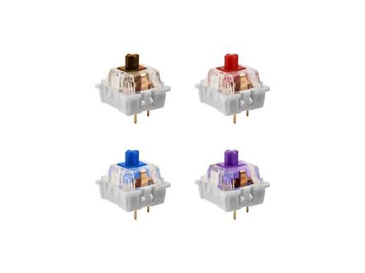

Caso curioso #1: ¿Por qué los switches mecánicos "suenan" distinto?
Cada familia de switches (lineales, táctiles y clicky) cambia por completo la sensación y el sonido al escribir. Te explicamos la diferencia antes de elegir tu próximo teclado.
Ver caso